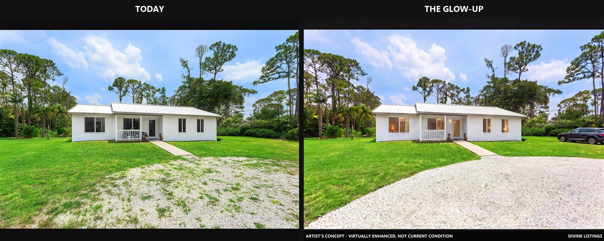
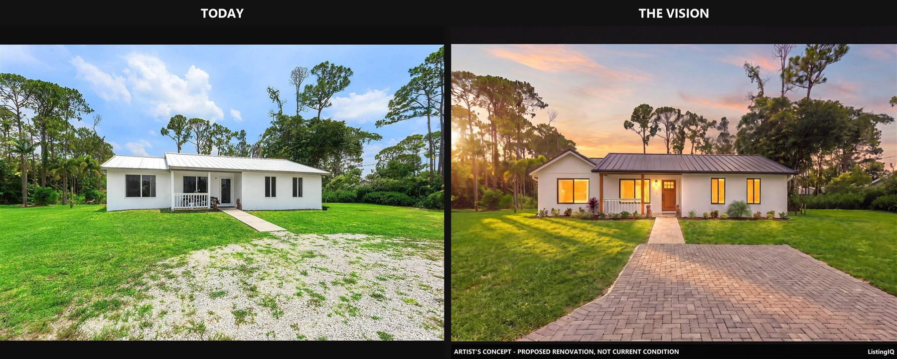
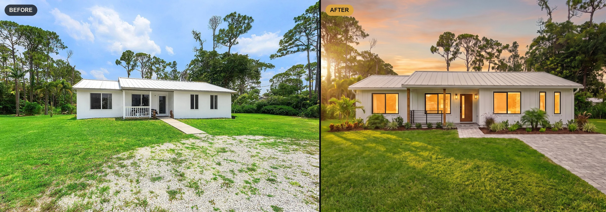
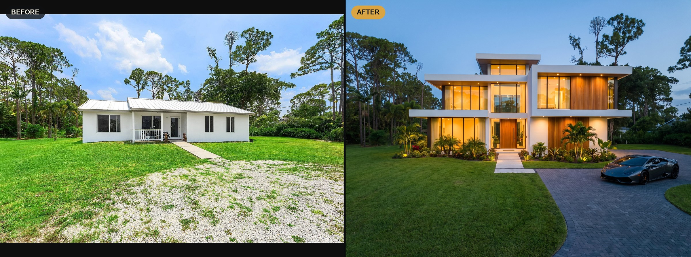
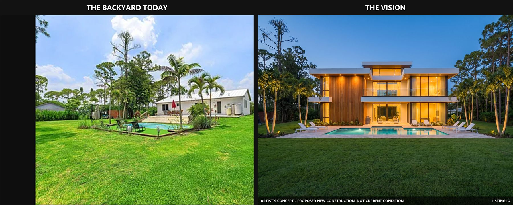

Rancher front elevation — West Palm Beach
Every lamp switched on, midday flatness graded out, lawn and gravel drive cleaned up, and a car parked where a buyer expects one. Same roofline, same window count, nothing structural touched.
Pick a tier and scroll. Every shot is the actual listing photo on the left and what we handed the agent on the right.
Your real photo, perfected. Same house, same shot, same everything — just lamps glowing, a proper colour grade, a clean drive and a nice car out front. Near-real, so this one can headline the listing itself.

Every lamp switched on, midday flatness graded out, lawn and gravel drive cleaned up, and a car parked where a buyer expects one. Same roofline, same window count, nothing structural touched.
The same house, fully renovated. Same bones, same footprint, same window count — new skin, new light. This is the one for the yard sign and the listing extras.

Dark standing-seam roof, black-framed windows, a paver drive and fresh beds, shot at golden hour. The existing footprint down to the window count — renovated, not rebuilt.

The same rancher taken a different way: board-and-batten siding, warm dusk light, layered palms and planting beds. Agents get to pick the look their buyers want.
What the lot could actually carry — a new-construction concept scaled to the land, dusk-lit, supercar in the drive. Same lot, same camera angle. This is the one that stops the car and pulls investors.

Two storeys of glass and warm wood dropped onto the same lot, lit at dusk with a supercar on the paver drive. Identical camera position to the listing photo, so buyers read it instantly.

The drone shot re-imagined: new build, resort pool, circular paver drive and re-planted grounds — with the neighbours, treeline and lot lines left exactly where they are.

The tired kidney pool becomes a full deck with loungers, uplit palms and glass across the back of the house. Same yard, same pines behind it.

A mockup of the finished render on the FOR SALE sign, standing in the real front yard — with the “artist's concept” label printed right on it. This is what the drive-by sees.
A cinematic film of the listing built entirely from its photos — today, the renovation, the dream build, one story. No drone, no videographer, no shoot day — and under every film we tell you exactly how many pictures went into it.
Title to credits in under a minute: the house today, the artist's-concept renovation at golden hour, then the dream build from the air and across the pool at dusk. Every frame generated from the listing's own photos, every concept scene labeled on-screen.
A slow push toward the front door in the property's real midday light. Nothing added, nothing landscaped, no colour changed — the listing as it is today, just moving.